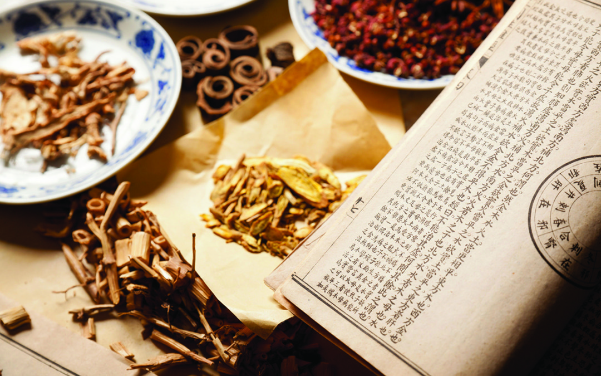

Tea Health Benefits
There are many health benefits attributed to drinking Chinese tea, ranging from feelings of well-being to near magical cures. For Western People, much of this interest is focused on ancient claims related to weight loss and more modern claims of cancer-prevention due to tea's anti-oxidant properties. Different tea types have different effect on person's health.
Here is some of the benefits of Chinese Teas as commonly recognized in Traditional Chinese Medicine: reduce fat, protein and low-density “bad” cholesterol; tea catechins have anti-bacterial and anti-virus properties; can reduce inflammation caused by rheumatoid arthritis; can reduce skin irritations.